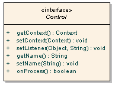

While this section provides an overview how Controls work please see the Javadoc. which provides extensive information and examples. Javadoc
Figure 1. Post Sequence Diagram - created with Enterprise Architect courtesy Sparx Systems
In Click all control classes must implement the Control interface. The Control interface is depicted below in Figure 2.
Figure 2. Control Interface Diagram - created with Enterprise Architect courtesy Sparx Systems
Methods on the Control interface include:
public class SimpleCallback extends Page {
public void onInit() {
ActionLink clickLink = new ActionLink("onClick");
clickLink.setListener(this, "onClick");
addControl(goLink);
}
public boolean onClick() {
System.out.println("onClick invoked");
return true;
}
}
The listener method can have any name but it must have take no parameters and must return a boolean or
java.lang.Boolean value.
When a callback method returns true the processing of other Controls will continue and the Pages onGet()
or onPost() event handler will be called. If a controls returns false not further Control processing
will be performed and neiher of the Page onGet() or onPost() methods will be invoked. This execution
logic is illustrated in the Page Execution Activity Diagram.
Being able to stop further processing and do something else can be very handy. For example your
Pages onGet() or onPost() method may perform an expensive database query to display a table. By using
returning false in a event handler you can skip this step and forward to the next page.
public class OrderPage extends Page {
public void onInit() {
Form form = new Form("form", getContext());
addControl(form);
..
Submit cancelButton = new Submit(" Cancel ");
cancelButton.setListener(this, "onCancelClick");
form.add(cancelButton);
}
public boolean onCancelClick() {
setForward("products.htm");
return false;
}
public void onPost() {
// Lengthy credit authorization operation
..
}
}

Figure 3. Package Class Diagram - created with Enterprise Architect courtesy Sparx Systems
Key classes include:
# Click Control messages
calendar-image-title=Calendar
creditcard-number-error={0} is invalid
date-format-error={0} is invalid. Date format is {1}
double-format-error={0} must be a number value
email-format-error={0} is invalid. Email format is user@hostname
errors-header=
errors-prefix=
errors-suffix=
errors-footer=
field-maxlength-error={0} must be no longer than {1} characers
field-minlength-error={0} must be at least {1} characters
field-required-error=You must enter a value for {0}
integer-format-error={0} must be a number value
label-required-prefix=
label-required-suffix=<font color="red">*</font>
not-checked-error=You must select {0}
number-maxvalue-error={0} must not be larger than {1}
number-minvalue-error={0} must not be smaller than {1}
select-error=You must select a value for {0}